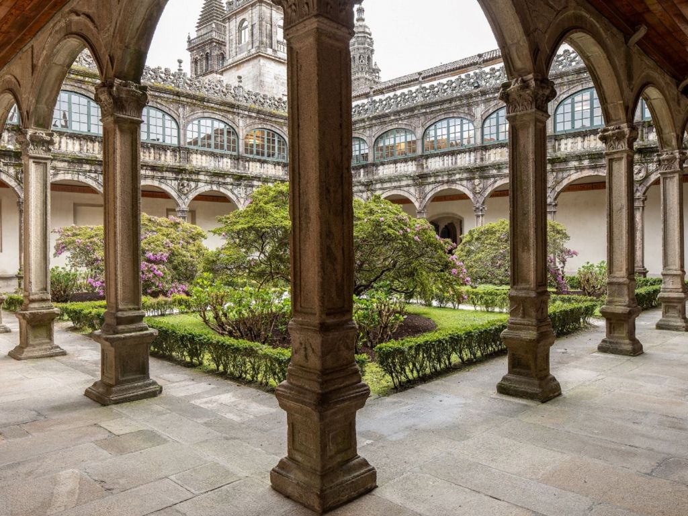
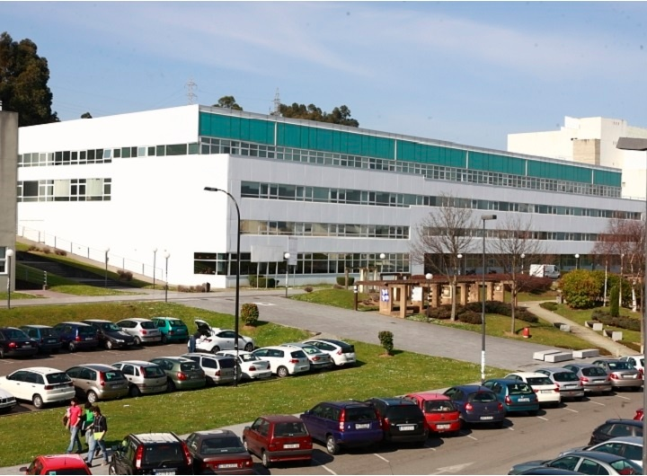
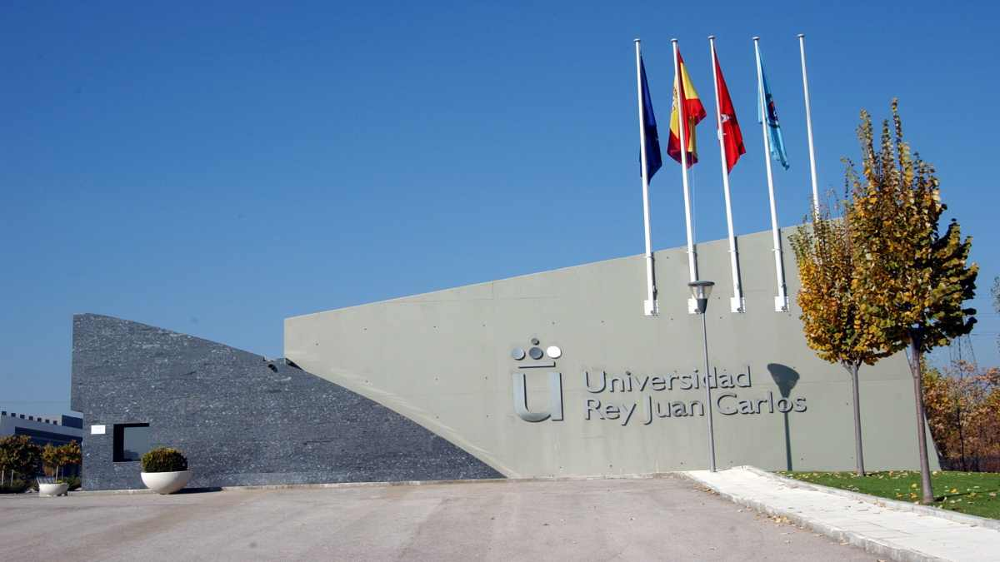
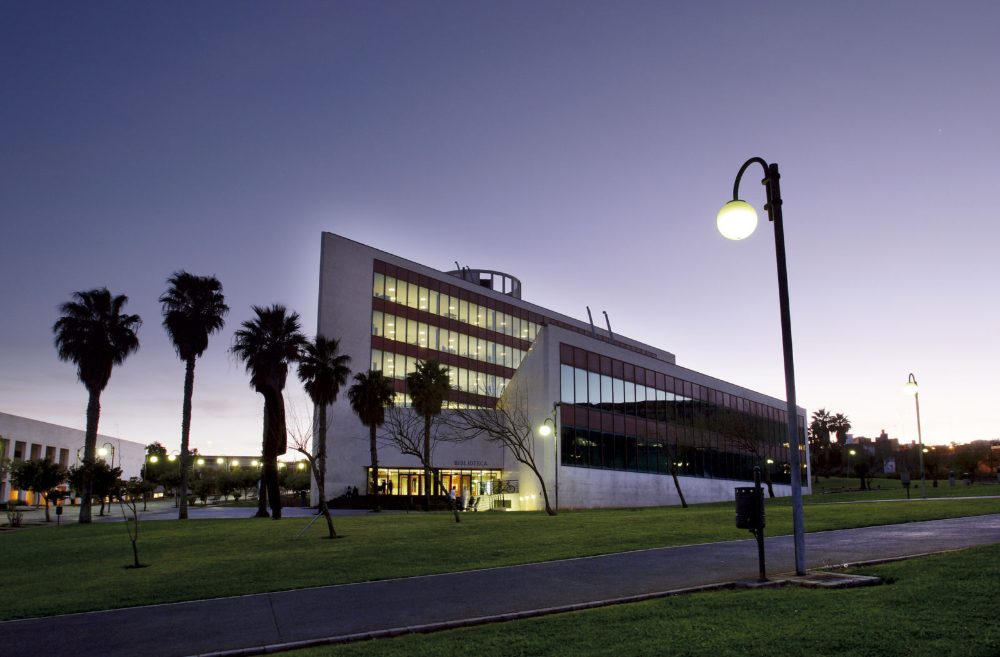
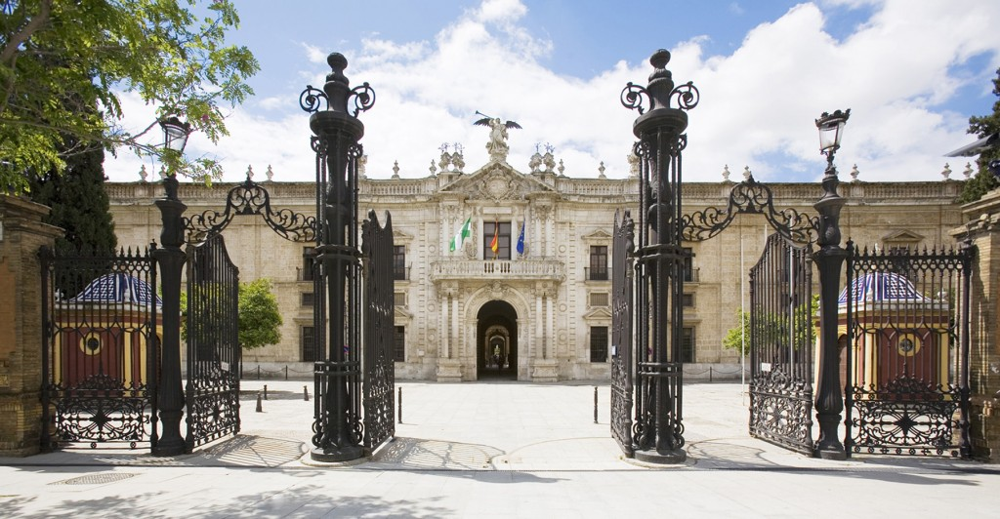
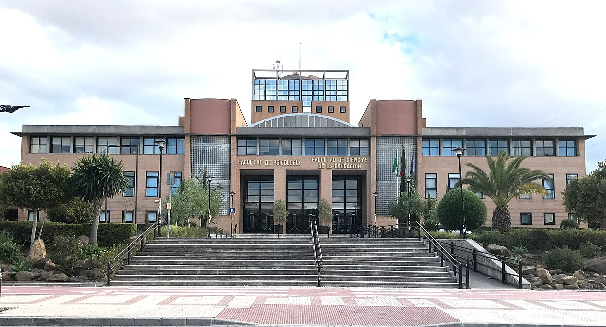
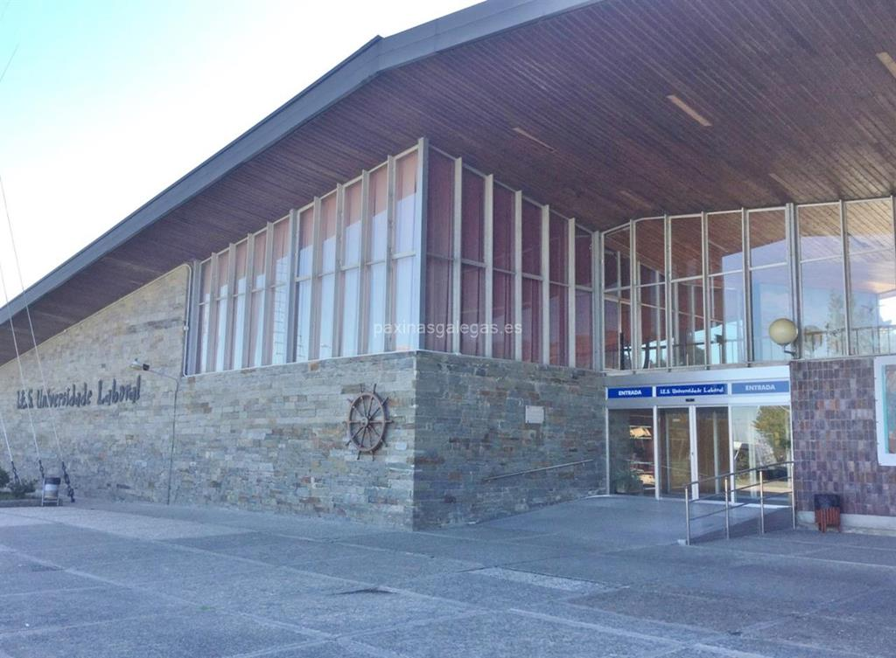
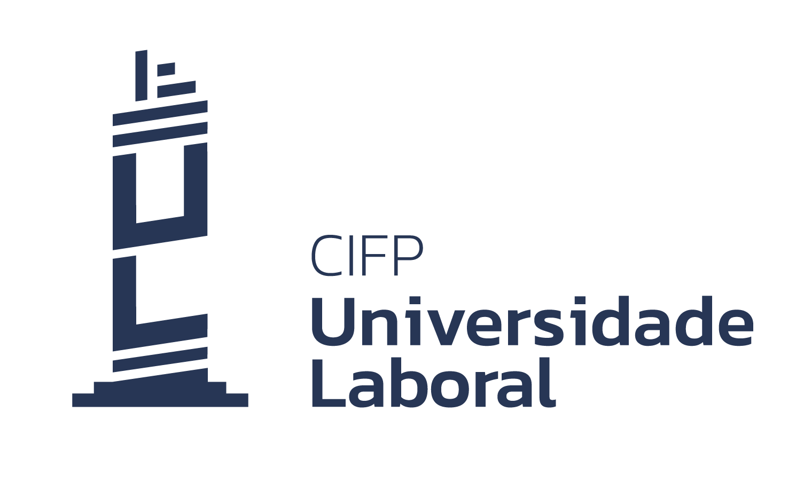

Fundada en 1495, es la universidad más antigua de Galicia y una de las de más tradición en España. Cuenta con dos campus principales en Santiago y Lugo, con amplia oferta de grados, másteres y doctorados. Destaca por su investigación, internacionalización y programas de movilidad.
Universidad pública creada en 1989, con campus en La Coruña y Ferrol. Ofrece una amplia variedad de grados e ingenierías como Biología, Derecho, Ingeniería Industrial, Arquitectura, etc. Dispone de residencias en ambos campus.
Universidad pública de Madrid fundada en 1996, con cinco campus en la Comunidad de Madrid. Segunda universidad en número de estudiantes en Madrid. Ofrece estudios desde grados hasta doctorados en diversas áreas.
Universidad pública en Tenerife fundada en 1792, la más antigua de Canarias. Cuenta con más de 25,000 miembros entre estudiantes y personal, y ofrece 46 grados, 36 másteres y 21 programas de doctorado. Tiene un papel estratégico tricontinental entre Europa, África y América.

Fundada en 1505, es la primera universidad de Andalucía y la tercera en España por número de estudiantes (más de 70,000). Dispone de 27 facultades y es muy reconocida por su investigación y patrimonio cultural. Forma parte del proyecto Andalucía TECH junto con la Universidad de Málaga.
Universidad pública fundada en 1972 con más de 35,000 estudiantes y cerca de 2,700 profesores. Ofrece 77 grados, 86 másteres y 28 programas de doctorado, con dos campus principales y sedes en la ciudad y municipios cercanos. También es impulsores del Campus de Excelencia Internacional Andalucía TECH.
El CIPF Universidade Laboral de Culleredo es un centro público de formación profesional ubicado en O Burgo, Culleredo (A Coruña), especializado en ciclos de FP de diversas ramas como actividades físicas, marítimo-pesquera, energía y electrónica. Destaca por su oferta variada, instalaciones modernas y ambiente acogedor.
 